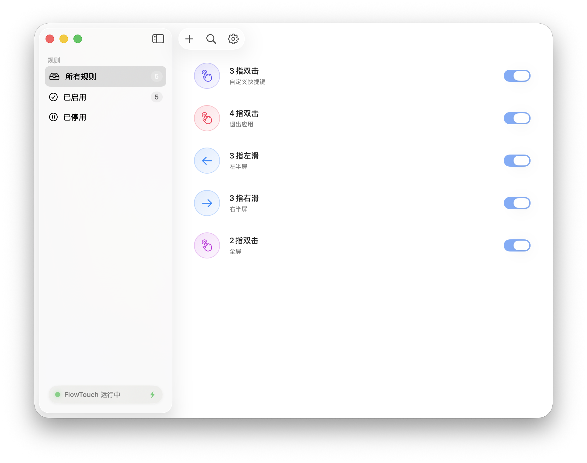
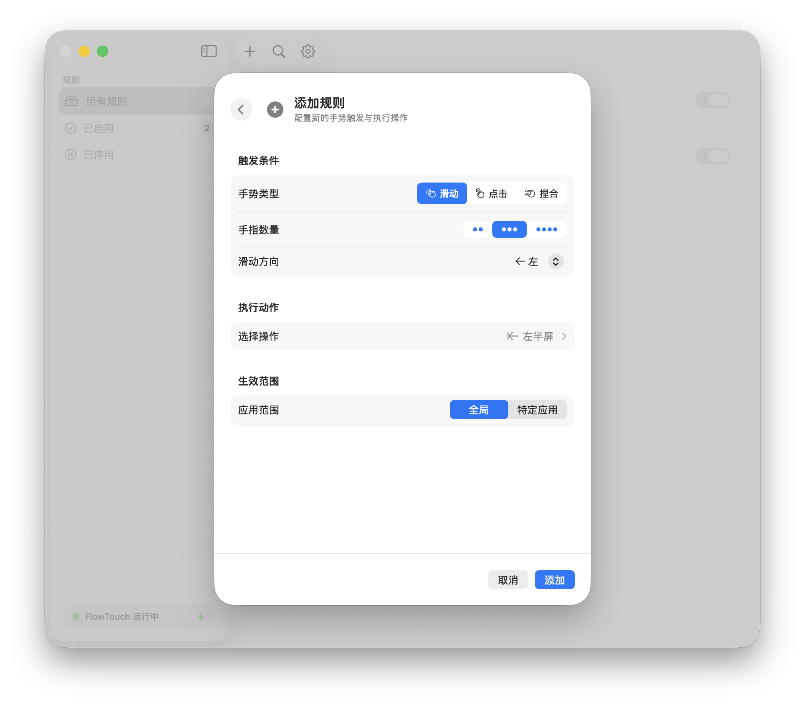

开箱即用的顺畅
内置 Starter 和 Full 预设。默认三指起步，避开基础滚动冲突，学习曲线平滑自然。
将闲置的触控手势，转化为你的系统控制中枢。

内置 Starter 和 Full 预设。默认三指起步，避开基础滚动冲突，学习曲线平滑自然。
相同的手势，在浏览器、Finder 或是设计软件里，都能执行完全不同的专属指令。
通过学习模式、屏幕 HUD 预览与系统冲突检测，实时清晰地掌握每次手势的触发状态。
滑、点、捏合。设定手指数量、挑选触发方向，并指定一个预期动作。
仅需三次点击，即可将复杂的终端操作转化为下意识的手指动作，剥离对键盘快捷键的死记硬背。

从基础的九宫格窗口排布、极速全屏、到多空间切换甚至亮度调节。
库内集成了 54 种高频系统操作，构成一套完整的桌面控制中枢。
常驻菜单栏，无侵入式设计。极低系统占用，时刻待命接管你的触控流。